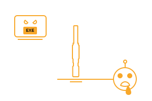
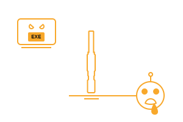

Droid // Surveillance
Rank: Epic
Eye of Eternity Advanced Behavior Aggregation Module
Description
Clever, 40cm-tall bot designed to stalk an individual and aggregate their mannerisms and personality matrix. Tends to get a little snarky.
Droid
Surveillance
Type
Walker Bot, Electronic Cloning
Architecture
sOGAS
Intelligence
Clever
Production
since y14
Designer
Black Ops Specialists, ИП Technologies
A husk is the digital impression of a deceased individual within UNIT. In a way, it is the niche of minutiae that this person occupied within their society. It isn't uncommon for these deaths to be used by government agents, black operatives, and criminals to establish virtually infallible identities.
These people are described as Shrouded.
Agent Rook's Guide to Interstellar Black Ops
In the new age of UNIT, surveillance has become a beast. CCTV and its futuristic derivatives pale in comparison to the systems that can be found in more advanced locales and secure locations, where each individual’s behavior is cross-examined across government and corporate profile databases by unwavering ASRIGs. To put it simply - in some places, you’ll be made kilometers from your infiltration target simply because you didn’t belong.
Depending on the location, different approaches can be taken to fool a system like this, such as finding an AI’s blind spots or imitating a location’s cultural profile, but the most consistent method is the Empire’s vor zhizni - life thief technique, which is what the Eye was built for.
Becoming a life thief requires time, resources, and preferably a prosthetic soul. The process involves stalking a target using digital and physical surveillance methods, aggregating their behavior, routine, and mannerism data into an analysis file using the Eye, then uploading it to one’s prosthetic soul before finally stepping into their shoes.
If an operative hasn’t had the cybernetic lobotomy procedure, the process gets far more difficult. They must study and learn the aggregate file to become their target (which requires real skill and talent), before struggling to ruin the life of the innocent target to take their place. It’s not a very comfortable experience, and there are recommended alternatives for “unmodified” agents.
What has God in store for the hollow beings that consume the souls of men for the arbitration of worldly tasks? Is this part of His plan, or will they suffer the just punishment they deserve?
Sister Cecilia Browne, The Plan in Motion
The Eye itself is a self-propelled, simple bot meant specifically the task of following around an individual and aggregating everything about them. It’s small - less than 20 cm in height - and features just about every digital and physical stealth algorithm and technology known to man, including a limited-use cloaking system that can hide it in plain view.
Hydraulic Stability Legs
Runs quickly. Able to be able to fix itself into any position for optimal camera angles.
Directional Mics
Clearly picks up on conversation through walls and from half a kilometer away.
Spectral Scanners
Sees through walls using a variety of advanced optics and sensors.
Omnus Comm Unit
Picks up on a wide variety of signals for processing.
Processor
Runs a snarky, clever intelligence designed to aggregate and compile personality profiles.
Stability Rig
Stabilizes itself while running.
Organus Probe
Using an experimental technology, performs basic hacks at a short distance without having to port.
Prosthetic souls have been around in some form for almost a century, but the Imperials seriously advanced the technology when they arrived onto the scene just a couple of decades ago. As they were and still are playing technological catch-up with the other major powers, they were forced to quickly and sometimes violently adopt new, extremely questionable methods to remain a relevant power.
The Eye was one of the many systems and doctrines that came about from Ugroza’s international black ops efforts. Designed and put into use just over a decade ago by Ugroza front corporation ИП Technologies, it is mainly used by their Cryptographic Analyst and Expeditionary units to infiltrate the corporations of other nations and perform acts of sabotage and espionage while posting as their own employees.
Currently, the Eye is a very rare device, but it isn’t particularly expensive as it is rather priceless. Few people even know about its existence, let alone understand how it functions or are even willing to use it properly, so finding a buyer or seller for one is quite difficult. There are no known methods for acquiring a Ripper outside of arranging a deal with a corrupt Ugroza operative, or infiltrating Ugroza (possibly the worst idea in the world).